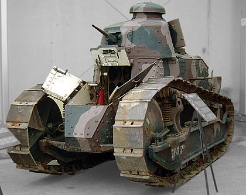

FRANCUSKA u Velikom ratu
Čini se da su oba saveznika rano u ratu dijelila slične koncepcije oklopnog traktora. S francuske strane, pukovnik Estienne, renomirani vojni inženjer i uspješan topnički časnik, proučavao je 1914. ideju o "oklopnom transportu" koji bi mogao prevoziti trupe kroz ničiju zemlju. Nakon nekoliko ispitivanja u Velikoj Britaniji, vidio je novi traktor Holt (koji se uglavnom koristio za vuču topništva) kao priliku za razvoj svojih ideja.
Revolucija!!!
Renault FT – (često pogrešno nazivaju Renault FT-17) je bio francuski laki tenk u Prvom svjetskom ratu. Zbog svog revolucionarnog dizajna smatra se prvim pravim tenkom i pretečom svih današnjih tenkova. Bio je prvi tenk koji je imao kupolu koja se mogla okretati za svih 360 stupnjeva. Proizveden je u velikom broju primjeraka, a neki su bili u službi i tijekom Drugog svjetskog rata. Nazvan je "tenk pobjede".
